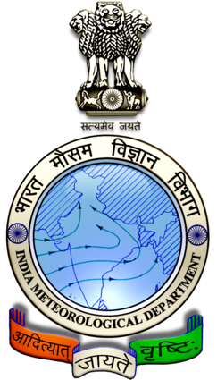

Professional Experience
Global Mobility Services (GMS), IL, USA
Data Scientist | Software & Data Expert
Aug 2023 – Present | May 2021 – Aug 2022
- Designed and deployed CompleTru.ai, an AI-powered compliance tool for cloud security audits.
- Developed multi-agent chatbots using Gemini LLM, MySQL, and RAG.
- Built predictive models for market demand forecasting, improving accuracy by 30%.
- Created interactive dashboards in Power BI & Tableau.
- Engineered secure ETL pipelines with AWS Lambda, Glue, and S3.
Michigan State University
Graduate Research Assistant
Aug 2023 – Present
- Developed an Attention-based Graph Neural Network model for gene-expression analysis.
- Automated web scraping with Selenium & BeautifulSoup.
- Worked on biomarker discovery for cancer immunology research.
Siemens (Capstone Researcher – MSU)
Data Scientist Capstone Researcher
Jan 2024 – Apr 2024
- Developed Inverse DNN & Gaussian Mixture models for design optimization.
- Created prescriptive optimization pipelines that reduced potential failures by $220K.
Westlake Chemicals (Capstone Scholar – MSU)
Data Scientist Capstone Scholar
Aug 2023 – Jan 2024
- Built an LLM-powered customer segmentation framework for targeted marketing.
- Developed data-driven insights dashboards for executive decision-making.

India Meteorological Department
Research Data Scientist
Jul 2020 – Aug 2021
- Developed AI-based forecasting models (LSTM, GRU, ARIMA) to improve weather predictions.
- Designed deep clustering models for meteorological data, increasing accuracy by 51%.
- Enhanced Named Entity Recognition (NER) in biomedical datasets.